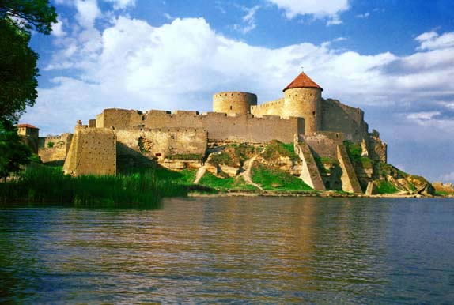
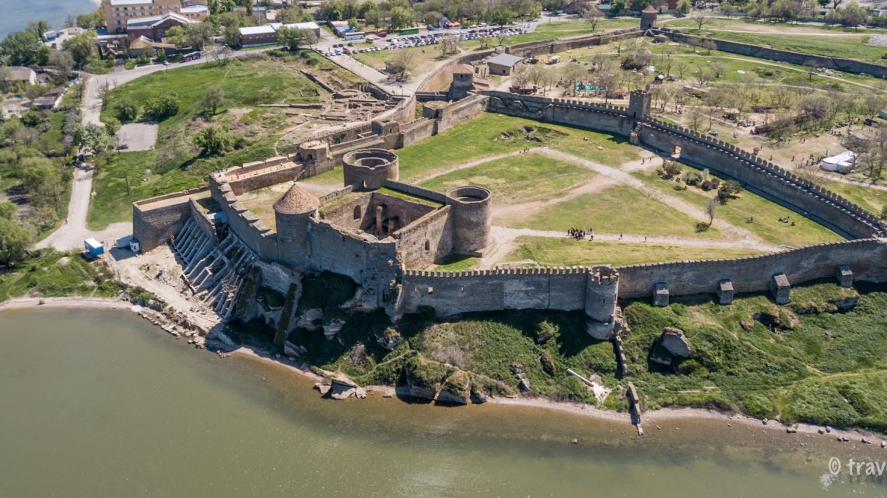
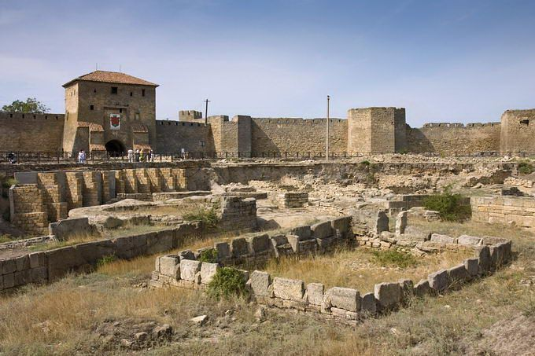

Білгород-Дністровська фортеця (до 1944 року - Аккерманська фортеця) - пам'ятник історії і містобудування XIII-XV століть. Є однією з найбільш збережених фортець на території України. Своїми розмірами вона перевершує всі подібні фортифікаційні споруди країни. Загальна площа території фортеці становить 9 га. Фортеця лежить на скелястому березі Дністровського лиману і має вигляд неправильного багатокутника. Раніше вона складалася з чотирьох дворів, кожен з яких мав специфічне призначення і міг самостійно вести оборону (нині збереглося тільки три фортечні двори).
Всі фортечні побудови обнесені міцними стінами, протяжність яких сягає 2,5 км. Через 40-45 м куртини були вбудовані фортечні вежі і бастіони. Їх початкова кількість сягала 34, 12 з них були порожніми бойовими вежами. Решта - бастіони і напівбастіони. Вони пізніше були забутіровані і перетворені в площадки для установки артилерійських знарядь. Багато веж твердині мають власні назви (вежа Овідія (Дівоча), Сторожова вежа, вежа Пушкіна і т.д.), які стали відображенням місцевих переказів і легенд.
Фортеця будувалася на залишках грецького міста Тіра. Існувало воно до IV століття. Але часті напади завойовників знищили поліс. Спочатку місто зруйнували готи, а потім гуни поклали кінець існуванню Тіри. Після греків на місці Тіри мешкали даки, анти, слов'яни, болгари.. На думку істориків, у Х столітті Білгород входив до складу Київської Русі, потім деякий час належав Угорському королівству, а ще пізніше — Галицько-Волинському князівству. У складі останнього місто перебувало до нашестя татаро-монголів.
Достеменно невідомо, коли було закладено Білгород-Дністровську фортецю. Нині її засновниками більшість істориків вважають генуезців, що прийшли у Причорномор'я в ХІІІ столітті. Цікаво, що ця територія входила в той час до складу Золотої Орди. Але хитрі генуезці якимось чином домовились із татаро-монголами. Офіційно Монкастро було татарським містом, але правили в ньому генуезці. Фортеця мала контролювати Дністровський лиман.
У другій половині XIV століття генуезці втратили свій вплив у Причорномор'ї, оскільки не мали можливості проходу Егейського моря через збільшення військового тиску з боку османів. На думку багатьох істориків на зміну Генуї прийшло Велике князівство Литовське. І саме у литовців наприкінці XIV століття Білгород відвоювали молдовани. Білгород-Дністровська фортеця є однією з найбільших середньовічних фортець в Україні. Периметр її стін становить 2,5 км, а загальна площа — понад 9 га. Товщина стін коливається від 1,5 до 5 метрів, а висота стін та башт — від 5 до 15 метрів. З півночі фортечні мури майже впритул підступають до Дністровського лиману. З інших трьох боків фортецю оточує рів, сучасна глибина якого сягає 13-14 метрів. Внутрішня стіна рову на кілька метрів вища ніж зовнішня.  Основу фортечного комплексу становить Цитадель — найбільш укріплена частина, збудована ще генуезцями. Вона складається з чотирьох великих башт, з'єднаних потужним муром. Башти мають власні назви: Придвірна (північно-східна), Комендантська (південно-східна), Темниця (південно-західна) та Скарбниця (північно-західна). Нині башта Скарбниця напівзруйнована, решта ж перебувають практично у відмінному стані. Площа двору цитаделі — 300 квадратних метрів. Тут є багато приміщень та розгалужена мережа підземних ходів, практично не досліджених. Колись у цитаделі містився комендантський палац.
Фортеця розділена внутрішніми стінами на кілька дворів, які могли бути самостійними фортифікаційними об'єктами. Цитадель розташована на території Гарнізонного двору. Цей двір має площу близько двох гектарів. Раніше він був забудований казармами, стайнями та складами боєприпасів.
Найбільший двір фортеці — Громадянський. Його площа 5 га. Колись він був забудований житловими спорудами. В османський період тут стояла велика мечеть. Але у XIX столітті усі житлові будівлі двору були розібрані. Три найбільші башти мають власні назви: Овідієва (Дівоча), Сторожова та Пушкіна. До цього двору веде центральна брама фортеці — Кілійська.
Був у фортеці і третій двір — Карантинний (інші назви Портовий, Господарський). Він був призначений переважно для торгівлі та складів. Але від цього двору практично нічого не залишилося.